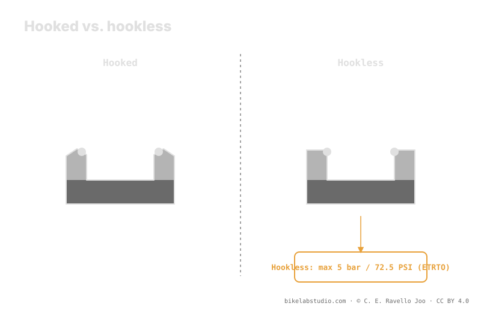

A hooked rim has a lip that retains the tire bead; a hookless rim has a straight wall and the bead is held by interference. So hookless imposes two hard conditions: tire compatibility (not every tire is approved) and a safety ceiling of 5 bar (72.5 PSI) per the ETRTO standard, which you don't exceed. You'll almost never touch that ceiling in MTB; the limit that really matters is the lower one, set by burping. Your running pressure is closed by the calculator.
"Hookless" is not a marketing fad or a budget version of the rim. It's a different geometry with its own rules, and one of those rules — the pressure ceiling — is a physical limit, not a suggestion.
The upper ceiling is ETRTO; your running pressure is something else. The PSI Pressure Calculator gives your real range by weight, width and rim. ▶ Open the PSI calculator
In a hooked rim, the inner edge ends in a small lip curved inward. That hook physically catches the tire bead and retains it against the pressure pushing outward. In a hookless rim, that wall is straight: the bead is not caught but held by interference — squeezed against the wall because its diameter is slightly smaller than the rim seat. Less material at the edge means a rim that tolerates flank impacts better, which is exactly where a hooked rim tends to crack.

The hook retains by shape; the straight wall retains by fit. Switching from one to the other changes the rules of the mount, not just the label on the rim.
Because nothing catches the bead on hookless, the ETRTO standard sets a safety ceiling of 5 bar (72.5 PSI) for hookless tubeless rims. Above that value, pressure can overcome the interference and walk the bead off the straight wall. That number is a hard limit: not "recommended," but the ceiling by design. The good news is that in MTB you rarely get near it — working pressures sit well below — but if you ever inflate to seat the bead, that 5 bar is the line you don't cross.
On a hooked rim you can mount almost any tubeless-ready tire without drama. On hookless you can't: the tire must be declared hookless-approved by the manufacturer, with a bead dimensioned and stiff enough to seat by interference. A non-approved tire may not seat safely, or may seat unevenly. Before mounting, confirm that both parts — rim and tire — declare hookless compatibility. Don't infer it: find it in writing.
The 5 bar ceiling is real, but in MTB practice it's never your problem. Your daily decision lives at the low end: how far you can drop before the bead momentarily releases air on a side hit — burping. That floor depends on your weight, tire width, rim inner width and terrain, and doesn't come from a chart. Hookless or hooked, the standard sets the ceiling; you set the floor with judgment, and the calculator refines it.
5 bar (72.5 PSI) per ETRTO. A safety ceiling you don't exceed, not the running pressure.
The hook retains the bead with a lip; hookless holds it by interference against the straight wall.
No. The tire must be declared hookless-approved by the manufacturer. Compatibility is mandatory.
No. In MTB you ride well below it. The limit you use is the lower one, set by burping.
The ceiling is ETRTO; your working pressure is closed by the PSI Pressure Calculator per wheel by width, rim and discipline. ▶ Open the PSI calculator